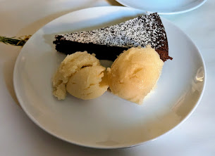

Sorbet poire, riesling et gingembre

Ici avec du brownie au miso
Pour un peu moins de 2L de sorbet :
- 1.2kg de poires bien mûres
- 25g de gingembre frais
- 600mL de riesling
- 350g de sucre
- Un demi-citron
- Un peu de sel
- Éplucher les poires, enlever leur cœur, et les couper en morceaux pas très gros, il faut qu'il reste 1kg. Éplucher et émincer le gingembre finement.
- Mettre les poires, le gingembre, et le vin à chauffer dans une casserole. Couvrir, faire bouillir, puis réduire le feu et faire mijoter 20 minutes.
- Sortir du feu, ajouter le sucre, bien mélanger pour que le sucre se dissolve, et mixer le tout jusqu'à ce qu'il n'y ait plus de morceaux.
- Passer le mélange dans une passoire fine pour enlever tous les petits morceaux, tout en pressant bien pour récupérer tout le liquide. Goûter et ajouter un peu de jus de citron et de sel pour que ça soit bien équilibré.
- Réfrigérer quelques heures, passer à la sorbetière jusqu'à ce que ça prenne, et laisser au congélateur quelques heures pour améliorer encore la consistance.